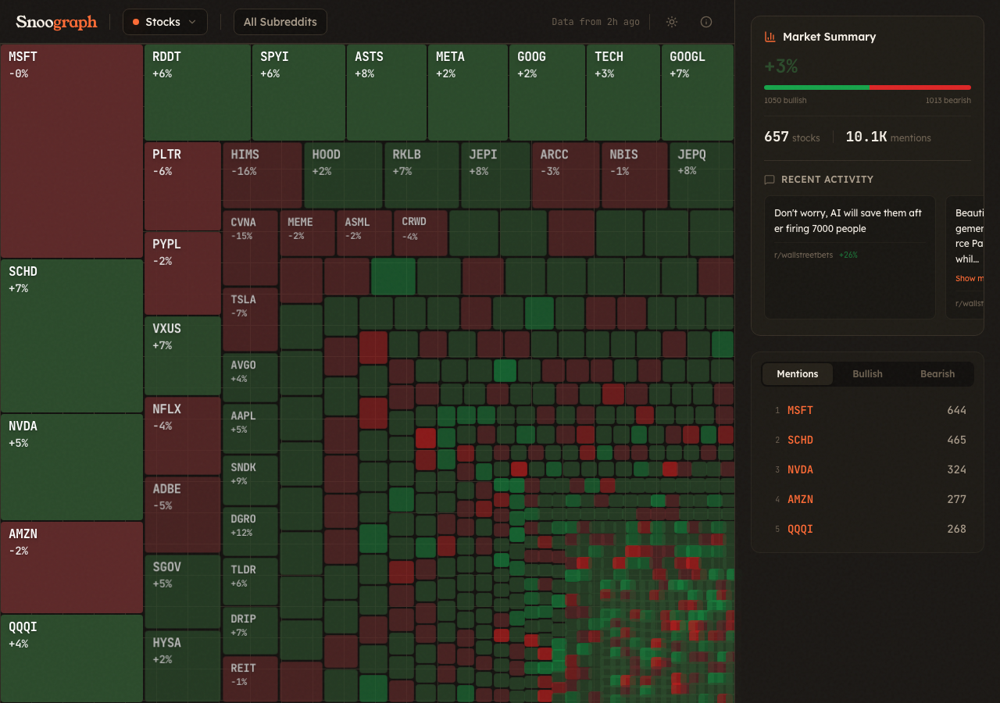

Reddit sentiment as heatmaps. Stop reading anecdotes — see how a community actually feels.
Reddit sentiment gets discussed in anecdotes — "this sub has gone downhill", "people seemed positive about X last month". There was no way to actually see community sentiment over time. Qualitative vibes, zero quantitative view.
Fetches posts and top comments from any subreddit. Runs each through NLP sentiment scoring. Aggregates by day and week into a normalized score from negative to positive.
Sentiment rendered as a calendar heatmap — same format as GitHub contributions but showing emotional tone. Patterns that would take hours to spot in text become visible in seconds.
Compare sentiment across subreddits side by side. Track how different communities respond to the same events across the same time window.

Enter any subreddit and see its sentiment history